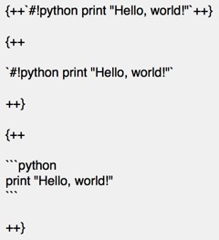

kubernetes学习之路
20.9. 绿色区块-代码
键入以开始搜索
kubernetes
prometheus
mkdocs
kubernetes学习之路
kubernetes
kubernetes
01.cobbler自动化部署
prometheus
prometheus
Prometheus简介
dashboard模板
mkdocs
mkdocs
mkdocs介绍
mkdocs介绍
1. 本文主题
2. mkdocs-material介绍
3. 提前说明
4. 最佳实践
5. 联系方式
mkdocs安装
mkdocs安装
1. 本地环境搭建(含入门配置)
2. 发布至GitHub Pages
3. 发布至自己的HTTP Server
mkdocs语法
mkdocs语法
1. 语法总览
2. 标题
3. 段落
4. 引用
5. 表格
6. 代码
6. 代码
6.1. 行内
6.2. 区块
6.3. 高亮
7. 字体样式
7. 字体样式
7.1. 斜体,粗体,粗斜体
7.2. 上标,下标
7.3. 下划线
7.4. 横线
7.5. 下划线+横线
8. 列表
8. 列表
8.1. 无序列表
8.2. 有序列表
8.3. 任务列表
9. 分割线
10. 链接
10. 链接
10.1. 普通链接
10.2. 自动链接
10.3. 锚点提示
11. 图片
11. 图片
11.1. 行内式
11.2. 参考式
12. 转义
13. 高亮
13. 高亮
13.1. 代码高亮
13.2. 背景高亮
14. 注解
14. 注解
14.1. 介绍
14.2. 完整格式
14.3. 空标题
14.4. 无标题
14.5. 无类型
14.6. 折叠
14.7. 11种颜色样式
14.8. 嵌套
15. 脚注
16. 元信息
17. 数学公式
17. 数学公式
17.1. 介绍
17.2. 导入js
17.3. 用法
18. emoji
18. emoji
18.1. 介绍
18.2. 工作原理
18.3. 最佳实践
19. 特殊符号
20. 嵌套
20. 嵌套
20.1. 介绍
20.2. 注解-注解
20.3. 列表-列表
20.4. 引用-引用
20.5. 注解-代码块
20.6. 列表-代码块
20.7. 引用-代码块
20.8. 黄色区块-代码
20.9. 绿色区块-代码
20.10. 红色区块-代码
20.11. 绿接红区块-代码
20.12. 注解-列表-引用
20.13. 列表-列表-引用
20.14. 引用-引用-代码
附录
附录
1. 支持代码高亮的语言
2. emojione全名短名映射表
3. 添加百度统计
4. 配色
5. 模块介绍
6. mkdocs层级关系
7. 支持中文搜索
8. mkdocs.yml范例
9. tab
10. 关于chrome显示异常的问题
20.9. 绿色区块-代码

效果
print
"Hello, world!"
print
"Hello, world!"
print
"Hello, world!"